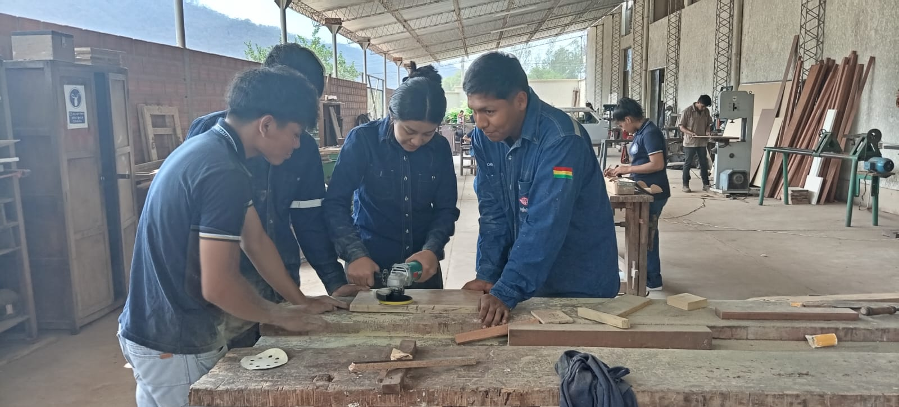
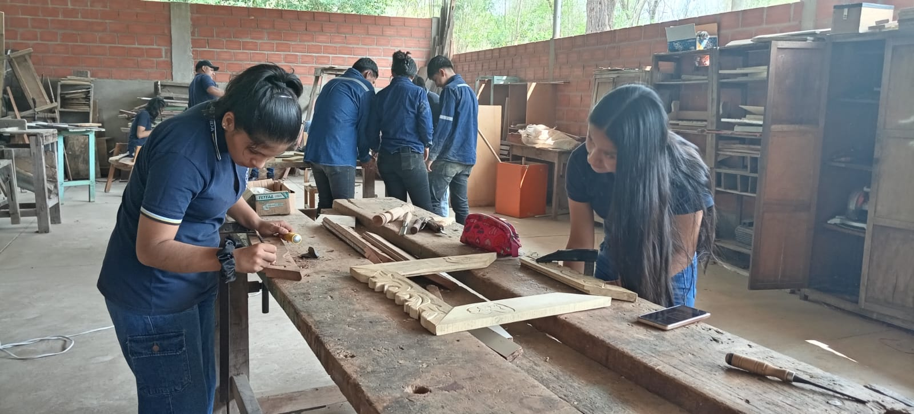

NUESTRAS CLASES PEDAGÓGICAS
Carpintería en Madera y Metal

Diseño de Muebles
Combina arte y técnica para la creación de planos y diseños de mobiliario funcional y estético, tanto en madera como en metal.

Técnicas de Ebanistería
Domina los acabados finos, ensambles complejos y técnicas avanzadas para trabajar la madera y crear piezas de alta calidad.

Técnicas de carpintería básica
Aprende diversas técnicas de carpintería básica que serán métodos esenciales para cortar, ensamblar y trabajar la madera con precisión y seguridad.